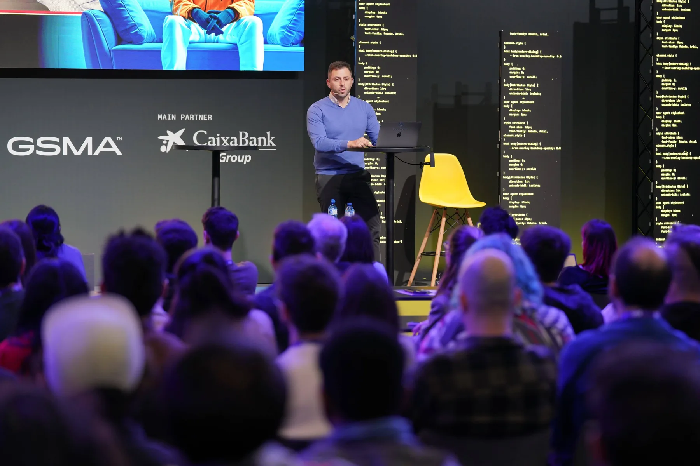
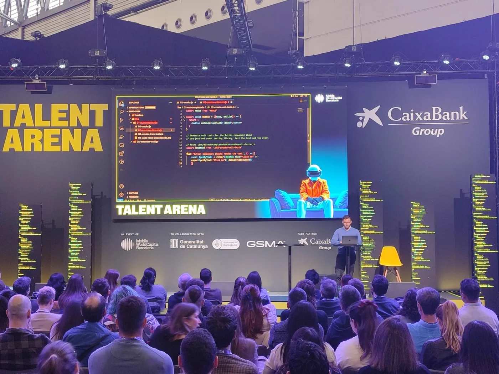
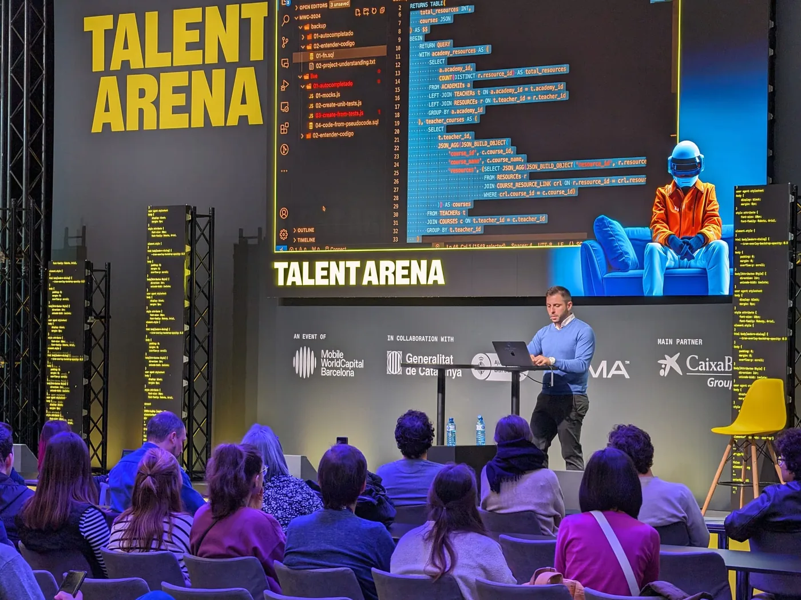
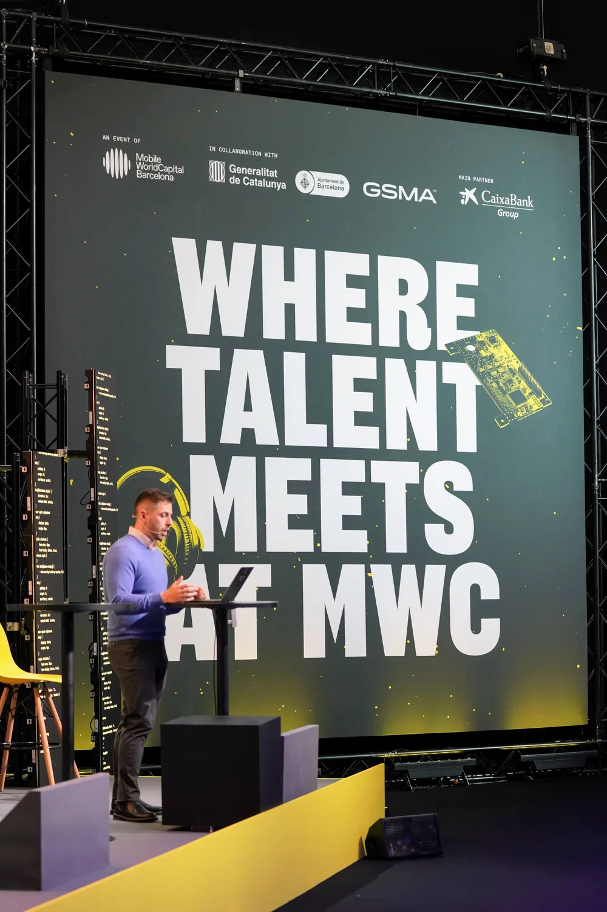
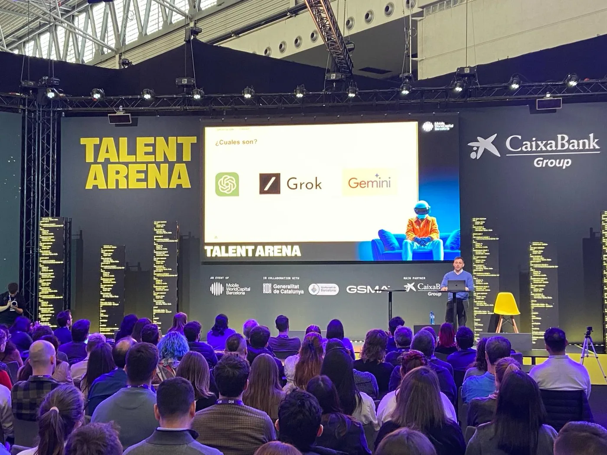
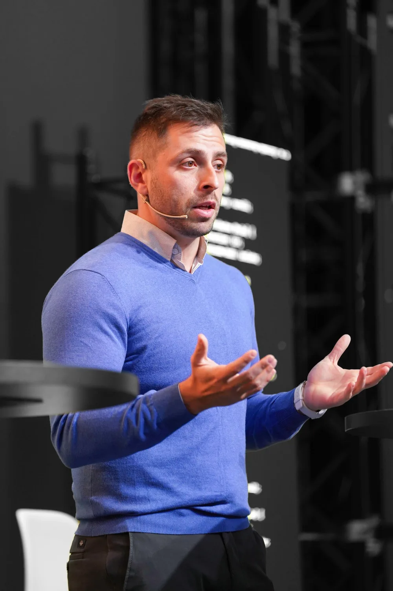

Public speaking · Technical interviews
Ace the Technical Interview with AI
A practical workshop at Talent Arena, MWC Barcelona 2024, about using language models to prepare, practise, understand code, and improve through feedback.


In February 2024 I gave a workshop with IT Academy at the first Talent Arena inside MWC Barcelona. The subject was direct: how can a developer use AI to prepare for a technical interview without outsourcing the thinking?
The presentation started with a short explanation of language models and then moved into practical work. We looked at interview preparation, mock interviews, code comprehension, test generation, and using pseudocode to make the intended solution explicit before writing it.
The goal was not to collect clever prompts. It was to show a repeatable way to practise: provide relevant context, ask the model to take a clear role, answer the question yourself, request specific feedback, and verify technical output before relying on it.
What I wanted people to learn
-
01
Prepare with real context
Give the model the role, job description, company context, interview format, and your actual experience. Generic context produces generic practice.
-
02
Use it as an interviewer
Ask one question at a time, answer before seeing suggestions, and request feedback on clarity, technical depth, missing assumptions, and follow-up questions.
-
03
Use code as working material
Practise explaining unfamiliar code, generating tests, spotting missing cases, and turning pseudocode into an implementation. The useful skill is explaining and checking the result.
-
04
Verify before trusting
Language models can sound certain when they are wrong. Run the code, inspect the assumptions, test edge cases, and be able to defend every answer in your own words.
AI can make interview practice more available and more specific. The candidate still has to understand, answer, and verify.
A useful practice loop
Start with the interview you are actually preparing for. Describe the role and ask the model to identify the likely technical areas, but compare its output with the job description and your own research.
Run a sequential mock interview. The model asks one question, you answer, it follows up, and only then does it provide feedback. This prevents the suggested answer from shaping your first response.
Finish with evidence. For code exercises, execute the solution and tests. For architectural questions, list trade-offs and failure modes. For behavioural questions, replace vague claims with concrete situations and results.
Talent Arena at MWC Barcelona
The workshop combined an introduction to language models with practical examples for interview preparation and software-development exercises. Click any photo to view it full size.










Photography: Mobile World Capital Barcelona (opens in a new tab).
What still matters
The models and products shown in 2024 have already changed. The important part of the workshop has not: useful AI work depends on good context, a clear sequence, active feedback, and verification.
Today I apply the same principles more broadly when working with coding agents. The tasks are larger and the tools are more capable, but the person still defines the problem, decides what evidence is sufficient, and takes responsibility for the result.